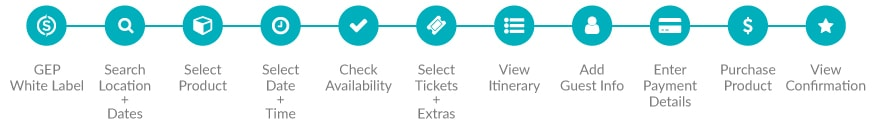
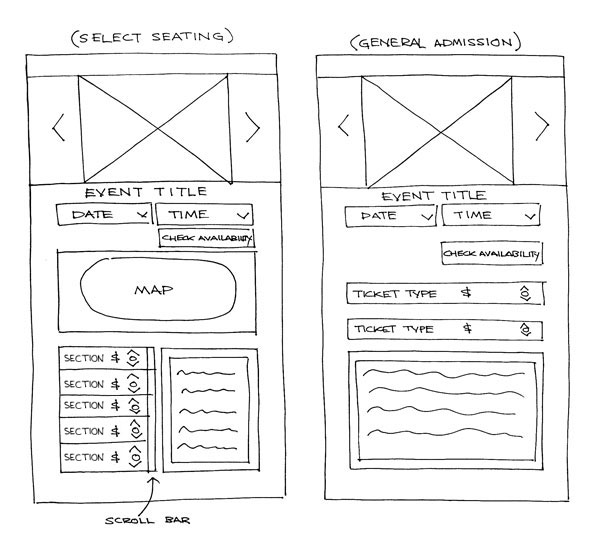
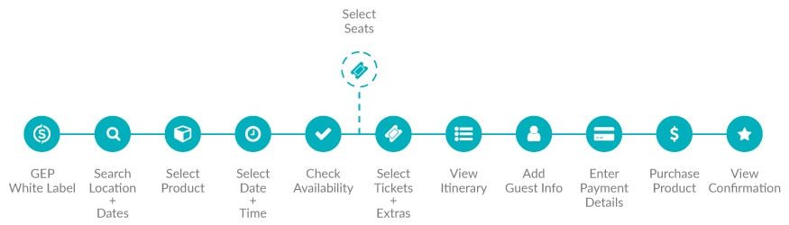
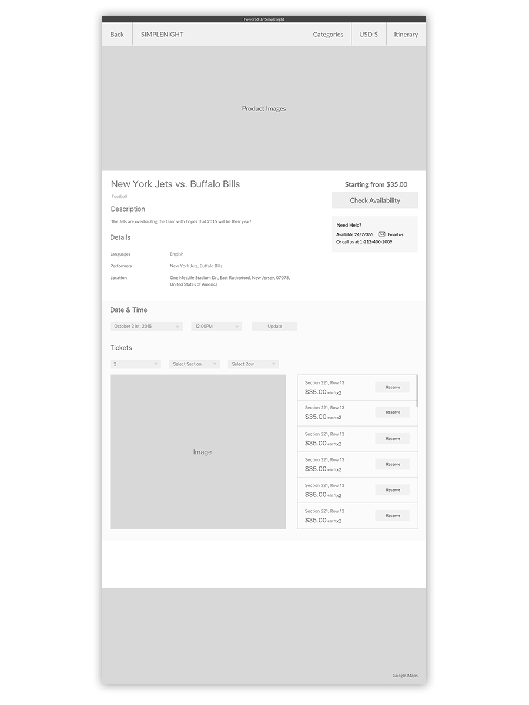
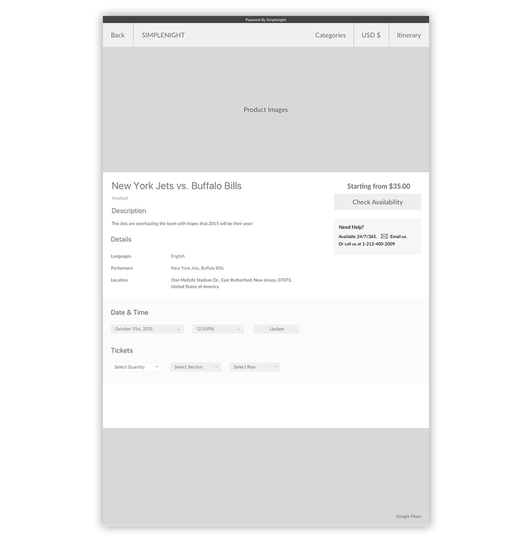
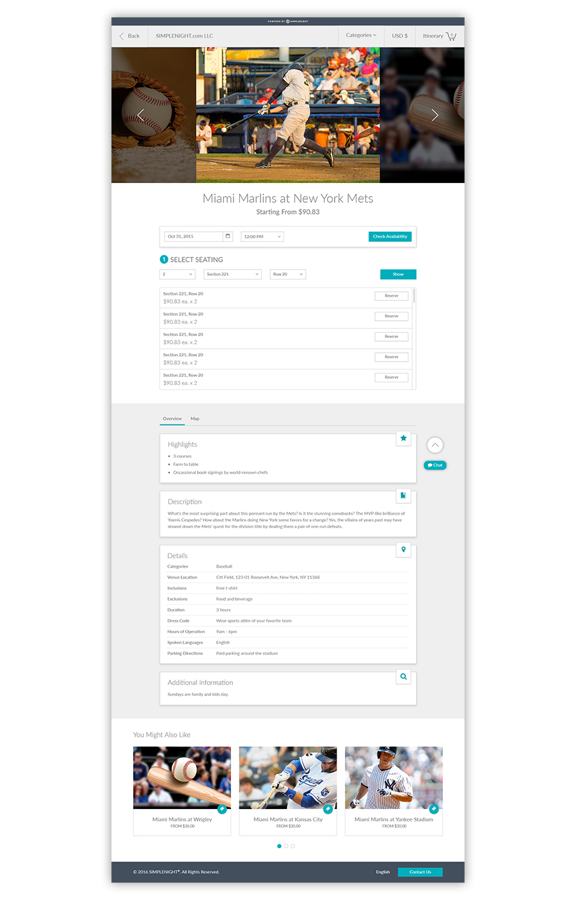
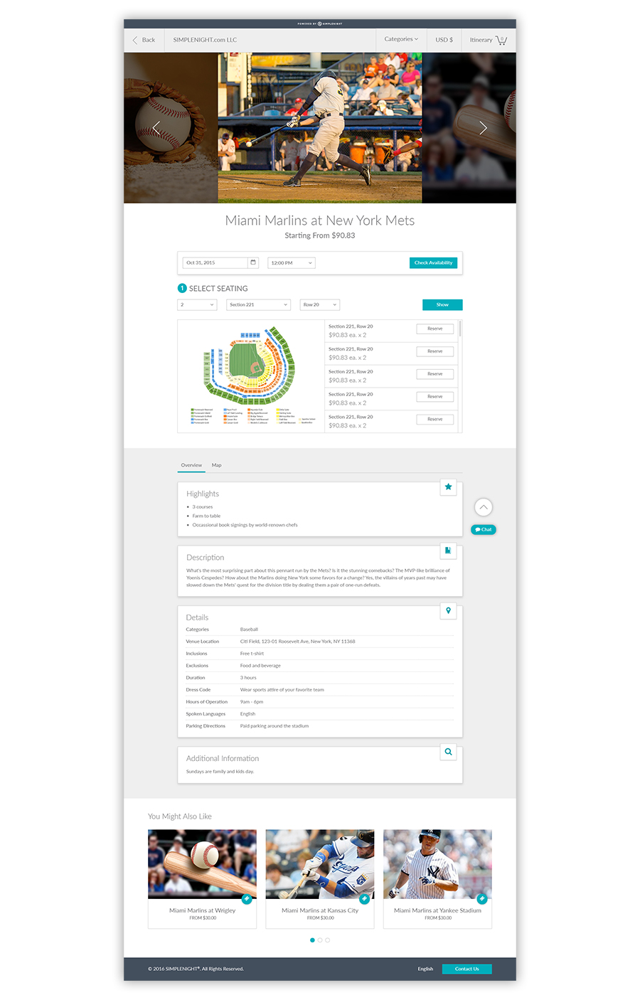
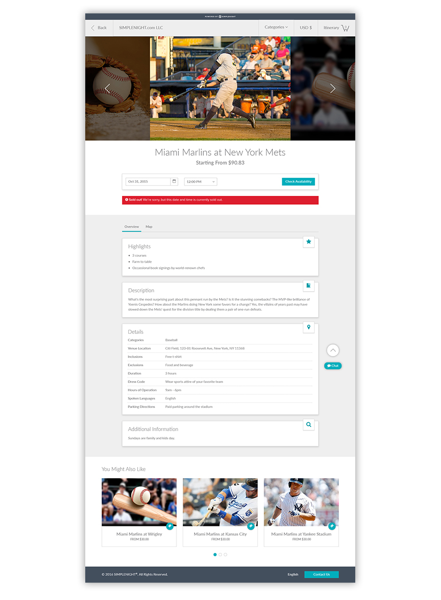

While Project Manager at Simplenight® I led the API integrations team and worked with B2B partners to build a seamless network of travel related experiences within Simplenight’s Global Experience Platform™. Through box office and ticket broker partners, the company hoped to expand offerings beyond the tours, nightlife, dining, and other products already available.
As a key player, it was my responsibility to manage the expansion into box office sales from endpoint to end user. Chief among the challenges faced of integrating box office sales was building a solution to handle auto and manual ticket splits.
Working collaboratively with the design team, we followed a tried and true process of exhaustive research, wireframe prototyping, and development of high fidelity mock-ups before hand-off to the front-end and back-end teams for integration into the live platform.
Some of the tools utilized in the development of the Simplenight® box office product pages included:
Our closest competitors in this space were TicketMaster, Eventbrite, and Ticketfly. And though my colleagues and I had all been to our fair share of events, it was essential we gain some insight into the companies with combined ticket sale revenues in excess of $30 billion for 2015.
Among our direct competition a few traits were apparent:
At this stage in the development of the GEP™ platform the overall user flow was already firmly established. The process entailed travel agents and other B2B clients accessing Simplenight’s inventory, searching for various products, confirming availability, and ultimately making a purchase.
Prior to the addition of box office sales within the GEP™, product pages displayed tickets and reservations as lists or groups of lists depending upon category or type. By handling box office in the same fashion without an updated design it had the unfortunate result of event pages with monolithic lists, displaying thousands of tickets all at once.
This undoubtedly would pose a problem for any agent to purchase tickets. I contributed a couple quick sketches inspired by competitors and also rendered a variation on the standard product page for general admission events.
The only addition to the existing flow necessary for box office ticket sales would be to accommodate splits, that is, providing a means for users to purchase tickets in pairs or large groups. Given the fact that a great deal of box office events may be general admission this extra step would not always be required.
In tandem with the UX team, I worked to put together simple wireframes to address the inventory display problem and a more viable option for users to pick seats and better handle ticket splits.
We would come to find out later adding venue maps to these product pages might be problematic due in part to proprietary diagrams unavailable to SIMPLENIGHT® as a third party. With that in mind, we also created a wireframe sans venue map.
The final stage for the new product pages were, of course, high fidelity versions. Much like the other product pages for dining, tours, etc., the new pages displayed relevant product detail including a general description, product highlights, and additional information where available.
A significant difference between the initial wireframes and final mock-ups included the removal of a Google Map preview of the venue’s location and the addition of recommended products based upon the current product being viewed.
 The final mock-ups also included some visual feedback cues to indicate active selections and scenarios wherein tickets for an event were sold out.
After an approval process, briefing of the front-end team, and testing in the QA environment our designs for box office were rolled into a push to the live platform.